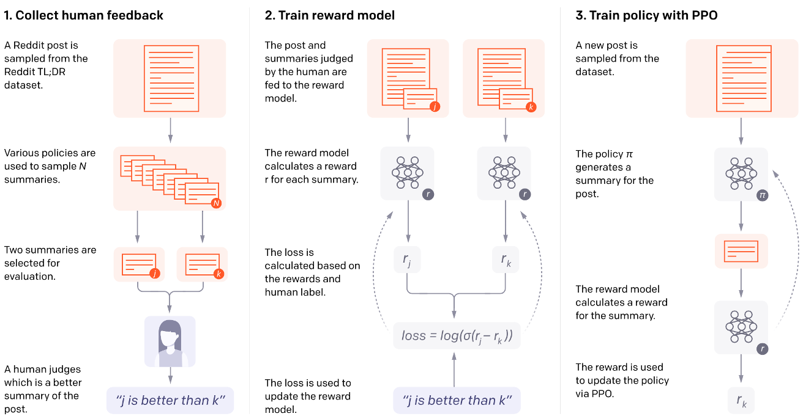

Human Preference Models:
Choice models
Sanmi Koyejo, Sang Truong, Kenan Hasanaliyev
Today: Choice Modeling
Tools to predict the choice behavior of a group of decision-makers in a specific choice context.

Application: Marketing
What features affect a car purchase?

Application: Transportation
- How pricing affects route choice
- How much is a driver willing to pay
Image source: https://www.supplychain247.com/article/8_factors_to_consider_when_choosing_route_optimization_software/locus
Application: Energy Economics

Del Granado, Pedro Crespo, Renger H. Van Nieuwkoop, Evangelos G. Kardakos, and Christian Schaffner. "Modelling the energy transition: A nexus of energy system and economic models." Energy strategy reviews, 20 (2018): 229-235.
Example: Daily activity-travel pattern of an individual

Source: Chandra Bhat, “ General introduction to choice modeling”
Application: RL and Language

https://openai.com/research/learning-to-summarize-with-human-feedback
History
- Thurstone research into food preferences in the 1920s
- Microeconomics: Random Utility Theory (1970s)
- McFadden: Nobel prize in 2000 for the theoretical basis for discrete choice.
- Psychology: Duncan Luce and Anthony Marley
- Luce, R. Duncan (1959). “Conditional logit analysis of qualitative choice behavior”
- Early use in marketing
- Predict demand for new products that are potentially expensive to produce
- Early use in transportation
- Predict usage of transportation resources, e.g., used by McFadden to predict the demand for the Bay Area Rapid Transit (BART) before it was built
Why are we studying choice models?
- Human preferences are often gathered by asking for choices across alternatives
- Basic choice models are the workhorse for ML from preferences (Bradley-Terry, Plackett Luce)
- Our discussion will highlight some of the key assumptions, e.g., utility and rationality
- We will cover models originally built for discrete/finite choices, which have been extended to ML applications (conditional choices)
(Discrete) choice models
- Models designed to capture decision-process of individuals
- True utility is not observable, but perhaps can measure via preferences over choices
- Main assumption: utility (benefit, or value) that an individual derives from item A over item B is a function of the frequency that they choose item A over item B in repeated choices.
- Useful Note: “Utility” in choice models <=> “Reward” in RL
Modeling: Discrete choice
- Choices are collectively exhaustive, mutually exclusive, and finite
$$y_{ni} = \begin{cases} 1, & \text{if } U_{ni} > U_{nj} \ \forall j \neq i \\ 0, & \text{otherwise} \end{cases}$$
$$U_{ni} = H_{ni}(z_{ni})$$
- $z_{n,i}$ are variables describing the individual attributes and the alternative choices
- $H_{ni}(z_{ni})$ is a stochastic function, e.g., linear $H_{ni}(z_{ni}) = \beta z_{ni} + \epsilon_{ni}$, where $\epsilon_{ni}$ are unobserved individual factors
Implications of the choice model
- Only the utility differences matter
$$\begin{aligned} P_{ni} &= Pr(y_{ni} = 1) \\ &= Pr(U_{ni} > U_{nj}, \forall j \neq i) \\ &= Pr(U_{ni} - U_{nj} > 0, \forall j \neq i) \end{aligned}$$
- Note that utility here is scale-free
- May be invariant to monotonic transformations
- Ok within a single context, but will need to normalize for comparing across datasets
- Common approach: normalize scale by standardizing the variance
Example: Binary choice with individual attributes
- Benefit of action depends on $s_n$ = individual characteristics
$$\begin{cases} U_n = \beta s_n + \epsilon_n \\ y_n = \begin{cases} 1 & U_n > 0 \\ 0 & U_n \leq 0 \end{cases} \end{cases} \quad \Rightarrow \quad P_{n1} = \frac{1}{1 + \exp(-\beta s_n)}$$
-
$\epsilon \sim$ Logistic
-
Replacing $\epsilon \sim$ Standard Normal gives the probit model
$$P_{n1} = \Phi(\beta s_n)$$
- Where $\Phi(.)$ is the normal CDF
Example: Utility is linear function of variables that vary over alternatives (Bradley-Terry Model)
- The utility of each alternative depends on the attributes of the alternatives (which may include individual attributes)
- Unobserved terms are assumed to have an extreme value distribution
$$\begin{cases} U_{n1} = \beta z_{n1} + \epsilon_{n1} \\ U_{n2} = \beta z_{n2} + \epsilon_{n2} \\ \epsilon_{n1}, \epsilon_{n2} \sim \text{iid extreme value} \end{cases} \quad \Rightarrow \quad P_{n1} = \frac{\exp(\beta z_{n1})}{\exp(\beta z_{n1}) + \exp(\beta z_{n2})}$$
-
Equivalently $P_{n1} = \frac{1}{1 + \exp(-\beta (z_{n1} - z_{n2}))}$
-
Can replace noise with Standard Normal $P_{n1} = \Phi(\beta (z_{n1} - z_{n2}))$
Example: Utility for each alternative depends on attributes of that alternative
- Unobserved terms are assumed to have an extreme value distribution
- With $J$ alternatives
$$\begin{cases} U_{ni} = \beta z_{ni} + \epsilon_{ni} \\ \epsilon_{ni} \sim \text{iid extreme value} \end{cases} \quad \Rightarrow \quad P_{ni} = \frac{\exp(\beta z_{ni})}{\sum_{j=1}^{J} \exp(\beta z_{nj})}$$
- Compare to standard model for multiclass classification (multiclass logistic)
- Can also replace noise model with Gaussians
Capturing correlations across alternatives
- All the prior models use the logistic model which does not capture correlations in noise.
- This can be fixed using a joint distribution over the noise e.g.,
$$\begin{cases} U_{ni} = \beta z_{ni} + \epsilon_{ni} \\ \epsilon_n \equiv (\epsilon_{n1}, \cdots, \epsilon_{nJ}) \sim N(0, \Omega) \end{cases}$$
Estimation
- Linear case: maximum likelihood estimators
- Logistic model: use (binary or multinomial) logistic regression
- Gaussian Model: use probit regression
- More complex function classes: use standard ML fitting tools for (regularized) maximum likelihood, e.g., stochastic gradient descent (SGD)
- Standard tradeoffs, e.g., bias-variance tradeoff
- More complex utility models generally require more data
- Most ML applications pool the model across individuals, individual differences may matter (more on this in future class)
What of measuring ordered preferences?
- Example: On a 1-5 scale where 1 means disagree completely and 5 means agree completely, how much do you agree with the following statement: “I am enjoying this class so far”
- Use ordinal regression, e.g.,
$$U_n = H_n(z_n) \quad \quad \quad y_n = \begin{cases} 1, & \text{if } U_n < a \\ 2, & \text{if } a < U_n < b \\ 3, & \text{if } b < U_n < c \\ 4, & \text{if } c < U_n < d \\ 5, & \text{if } U_n > d \end{cases}$$
- For some real numbers $a, b, c, d$ (parameters)
Ordered Logit
- For linear utility: $U_n = \beta z_n + \epsilon$, $\epsilon \sim$ Logistic
$Pr(\text{choosing 1}) = Pr(U_n < a) = Pr(\epsilon < a - \beta z_n) = \frac{1}{1 + \exp(-(a - \beta z_n))}$
$$\begin{aligned} Pr(\text{choosing 2}) &= Pr(a < U_n < b) = Pr(a - \beta z_n < \epsilon < b - \beta z_n) \\ &= \frac{1}{1 + \exp(-(b - \beta z_n))} - \frac{1}{1 + \exp(-(a - \beta z_n))} \end{aligned}$$
$$...$$
$Pr(\text{choosing 5}) = Pr(U_n > d) = Pr(\epsilon > d - \beta z_n) = 1 - \frac{1}{1 + \exp(-(d - \beta z_n))}$
- Can also replace with Gaussian for ordered probit regression
Plackett-Luce Model
- Ranking models the sequence of choices (Plackett and Luce in 1970s)
- Probability of choice 1, 2, …, J is
$Pr(\text{ranking } 1, 2, \dots, J) = \frac{\exp(\beta z_1)}{\sum_{j=1}^{J} \exp(\beta z_{nj})} \cdot \frac{\exp(\beta z_2)}{\sum_{j=2}^{J} \exp(\beta z_{nj})} \cdots \frac{\exp(\beta z_{J-1})}{\sum_{j=J-1}^{J} \exp(\beta z_{nj})}$
- PL is common in biomedical literature
- aka rank ordered logit (econometrics ~1980s), or exploded logit model
- All the extensions mentioned also apply (nonlinear utility, correlated noise, etc.)
Modeling and estimation summary
- Choose the utility model, i.e., how the attributes and alternatives define the utility e.g., linear function of attributes with logistic noise
- Choose the response/observation model, e.g., binary, multiple choice, ordered choice.
- Fit the model using (regularized) maximum likelihood
Aside: “Revealed preference” vs “stated preference”
- Revealed preference: Use observed data about the choices to estimate value ascribed to items.
- Generally offline observational data about real choices
- Stated Preference: Use the choices made by individuals under experimental conditions to estimate these values
- Generally online experimental data (can include controlled experiments)
- Revealed preference is considered a “real” choice, so can be more accurate
- In simulated situations, participants may not respond well to hypotheticals
- OTOH: observed data may not cover the space, hence the appeal of experiments
Exercise (inclass): choice model for class(es)
- “Should you take CS 329H or not?”
- What are the attributes/features (describe what to measure about a class)?
- What utility model?
- What is the observation/response model?
- Revealed preference (observed choices) or stated preference (hypothetical)?
- “Should you take CS 329H or CS 221 or CS 229?”
- What are the attributes/features?
- What utility model?
- What is the observation/response model?
- Revealed preference or stated preference?
Exercise (inclass): choice model for language
Design a choice model to evaluate the quality of a language model?
- What utility model?
- What are the attributes/features?
- What is the observation/response model?
- Revealed preference or stated preference?
- Who should you query?
- Individual or pooled responses: why or why not?
- What are some pro/cons of your design?
The ideal point model
- An embedding approach, assumes user item preference depends on distance
- Let $x_n$ denote a latent vector representing an individual $n$
- Let $v_i$ denote a latent vector representing choice (or item) $i$ $U_{ni} = dist(x_n, v_i) + \epsilon_{ni}$
- Model is equivalent to choosing the “closest” item
$$y_{ni} = \begin{cases} 1, & \text{if } U_{ni} > U_{nj} \ \forall j \neq i \\ 0, & \text{otherwise} \end{cases}$$
Ideal point model: the why
- Pros: Can sometimes learn preferences faster than attribute-based preference models by exploiting geometry (see refs)
- Cons:
- Embedding assumption may be strong (can make more flexible via distance function choice)
- However, have to select a distance function (usually use Euclidian distance in the embedding)
Jamieson, Kevin G., and Robert Nowak. "Active ranking using pairwise comparisons."
Tatli, Gokcan, Rob Nowak, and Ramya Korlakai Vinayak. "Learning Preference Distributions From Distance Measurements."
Choice models in RL (and RLHF)

Application: RL and Language
(Bradley-Terry model)

https://openai.com/research/learning-to-summarize-with-human-feedback
Choice models in ML (recommender systems, bandits, Direct Preference Optimization)

Choice models in ML (recommender systems, bandits, DPO)

Why DPO?

- RLHF pipeline is complex and unstable due to the reward model optimization.
- DPO is more stable and can be used to optimize the reward model directly.
Rafael Rafaelov, Archit Sharma, Eric Mitchell, Stefano Ermon, Christopher D. Manning, and Chelsea Finn, "Direct preference optimization: Your language model is secretly a reward model."
DPO: Bradley-Terry model
- Given prompt $x$ and completions $y_w$ and $y_l$ the choice model gives the preference
$$p^*(y_w > y_l | x) = \frac{\exp(r^*(x, y_w))}{\exp(r^*(x, y_w)) + \exp(r^*(x, y_l))}$$
where $r^*(x, y)$ is some latent reward model that we do not have access to (i.e., the human preference)
DPO: Bradley-Terry model
Luckily, we can use parameterize the reward model with some neural networks with parameters $\phi$:
Let us start with the Reward Maximization Objective in RL:
$$\max_{\pi_\theta} \mathbb{E}_{x \sim \mathcal{D}, y \sim \pi_\theta(y|x)} [r_\phi(x, y) - \beta D_{KL}(\pi_\theta(y|x) \| \pi_{\text{ref}}(y|x))]$$
- Where $\pi_\theta(y|x)$ is the language model, and $\pi_{\text{ref}}(y|x)$ is the reference model (e.g., the language model before fine-tuning)
$$\max_{\pi_\theta} \mathbb{E}_{x \sim \mathcal{D}, y \sim \pi_\theta(y|x)} [r_\phi(x, y) - \beta D_{KL}(\pi_\theta(y|x) \| \pi_ {\text{ref}}(y|x))]$$
Recall the definition of KL divergence:
$$D_{KL}(p \| q) = \sum_{x \in \mathcal{X}} p(x) \log \frac{p(x)}{q(x)} = \mathbb{E}_{x \sim \mathcal{X}} \left[ \log \frac{p(x)}{q(x)} \right]$$
Then we can rewrite the objective as:
$$\begin{aligned} &\max_{\pi_\theta} \mathbb{E}_{x \sim \mathcal{D}, y \sim \pi_\theta(y|x)} \left[ r_\phi(x, y) - \beta \mathbb{E}_{y \sim \pi_\theta(y|x)} \left[\log \frac{\pi_\theta(y|x)}{\pi_{\text{ref}}(y|x)} \right] \right]\\ &=\max_{\pi_\theta} \mathbb{E}_{x \sim \mathcal{D}} \mathbb{E}_{y \sim \pi_\theta(y|x)} \left[ r_\phi(x, y) - \beta \log \frac{\pi_\theta(y|x)}{\pi_{\text{ref}}(y|x)} \right] \end{aligned}$$
$$\begin{aligned} &\max_{\pi_\theta} \mathbb{E}_{x \sim \mathcal{D}} \mathbb{E}_{y \sim \pi_\theta(y|x)} \left[ r_\phi(x, y) - \beta \log \frac{\pi_\theta(y|x)}{\pi_{\text{ref}}(y|x)} \right] \\ &\propto \min_{\pi_\theta} \mathbb{E}_{x \sim \mathcal{D}} \mathbb{E}_{y \sim \pi_\theta(y|x)} \left[ \log \frac{\pi_\theta(y|x)}{\pi_{\text{ref}}(y|x)} - \frac{1}{\beta} r_\phi(x, y) \right] \text{// reverse and divide } \beta\\ &= \min_{\pi_\theta} \mathbb{E}_{x \sim \mathcal{D}} \mathbb{E}_{y \sim \pi_\theta(y|x)} \left[ \log \frac{\pi_\theta(y|x)}{\frac{1}{Z(x)} \pi_{\text{ref}}(y|x) \exp\left(\frac{1}{\beta} r_\phi(x, y)\right)} - \log Z(x) \right] \end{aligned}$$
$$\text{with} \quad Z(x) = \sum_{y} \pi_{\text{ref}}(y|x) \exp\left(\frac{1}{\beta} r_\phi(x, y)\right)$$
$$\pi^*(y|x) = \frac{1}{Z(x)} \pi_{\text{ref}}(y|x) \exp\left(\frac{1}{\beta} r_\phi(x, y)\right)$$
Then, we can rewrite the optimization problem as:
$$\min_{\pi_\theta} \mathbb{E}_{x \sim \mathcal{D}} \mathbb{E}_{y \sim \pi_\theta(y|x)} \left[ \log \frac{\pi_\theta(y|x)}{\pi^*(y|x)} - \log Z(x) \right]$$
$$= \min_{\pi_\theta} \mathbb{E}_{x \sim \mathcal{D}} \mathbb{E}_{y \sim \pi_\theta(y|x)} \left[ \mathbb{D}_{KL}(\pi_\theta(y|x) \| \pi^*(y|x)) - \log Z(x) \right]$$
Thus, the optimal solution (i.e., the optimal language model) is:
$$\pi_\theta(y|x) = \pi^*(y|x) = \frac{1}{Z(x)} \pi_{\text{ref}}(y|x) \exp\left(\frac{1}{\beta} r_\phi(x, y)\right)$$
$$\begin{aligned} \pi_\theta(y|x) &= \frac{1}{Z(x)} \pi_{\text{ref}}(y|x) \exp\left(\frac{1}{\beta} r_\phi(x, y)\right)\\ \log \pi_\theta(y|x) &= \log \pi_{\text{ref}}(y|x) + \frac{1}{\beta} r_\phi(x, y) - \log Z(x) \text{// perform } \log(.)\\ r_\phi(x, y) &= \beta \log \frac{\pi_\theta(y|x)}{\pi_{\text{ref}}(y|x)} + \beta \log Z(x)\\ \end{aligned}$$
$$p_\phi(y_w > y_l | x) = \frac{\exp(r_\phi(x, y_w))}{\exp(r_\phi(x, y_w)) + \exp(r_\phi(x, y_l))}$$
We also have the optimal reward model:
$$r_\phi(x, y) = \beta \log \frac{\pi_\theta(y|x)}{\pi_{\text{ref}}(y|x)} + \beta \log Z(x)$$
Thus, we can rewrite the choice model as:
$$\begin{aligned} p_\phi(y_w \succ y_l | x) &= \frac{1}{1 + \exp\left( \beta \log \frac{\pi_\theta(y_l | x)}{\pi_{\text{ref}}(y_l | x)} - \beta \log \frac{\pi_\theta(y_w | x)}{\pi_{\text{ref}}(y_w | x)} \right)}\\ &= \sigma\left( \beta \log \frac{\pi_\theta(y_w | x)}{\pi_{\text{ref}}(y_w | x)} - \beta \log \frac{\pi_\theta(y_l | x)}{\pi_{\text{ref}}(y_l | x)} \right) \end{aligned}$$
DPO: Bradley-Terry model
Recall our objective to maximize the reward model, we can rewrite the objective as maximizing the likelihood of the choice model:
$$\mathcal{L} (r_\theta, \mathcal{D}) = - \mathbb{E}_{(x, y_w, u_l) \sim \mathcal{D}} \left[ \log p_\phi(y_w \succ y_l | x) \right]$$
Finally, we can rewrite the objective as:
$$\begin{aligned} \mathcal{L}_{DPO}(\pi_\theta; \pi_{\text{ref}}) &= - \mathbb{E}_{(x, y_w, u_l) \sim \mathcal{D}} \left[ \log p_\phi(y_w \succ y_l | x) \right]\\ &= -\mathbb{E}_{(x, y_w, y_l) \sim D} \left[ \log \sigma\left( \beta \log \frac{\pi_\theta(y_w | x)}{\pi_{\text{ref}}(y_w | x)} - \beta \log \frac{\pi_\theta(y_l | x)}{\pi_{\text{ref}}(y_l | x)} \right) \right] \end{aligned}$$
Rafael Rafaelov, Archit Sharma, Eric Mitchell, Stefano Ermon, Christopher D. Manning, and Chelsea Finn, "Direct preference optimization: Your language model is secretly a reward model."

Should your ML application use an explicit utility/reward model?
- Pro:
- Reward models can be re-used (in principle)
- Reward model can be examined to infer properties of human(s), and measure the quality of the preference model(s)
- Reward model(s) add useful inductive biases to the training pipeline
- Cons:
- The extra step of reward modeling can introduce (unnecessary?) errors
- Reward model optimization can be unstable (e.g., in RLHF, as argued by DPO)
Some criticisms of choice modeling more broadly
- Real-world choices often appear to be highly situational or context-dependent e.g., way choice is posed, emotional states, other factors not well modeled.
- Arguably what is exploited by marketing. Related to framing effects (more later).
- A partial rebuttal: In principle, can always add more context to the model.
- Many choices are intuitive rather than rational, so utility optimization models do not apply
- Please have limited attention and cognitive capability, especially for less salient choices
- Default choices are powerful, e.g., in 401K, or opt-in organ donors
Q & A
- What are some key assumptions in (discrete) choice models?
- Rationality (existence of a utility function that determines choices)
- Parametric model for utility and choice noise
- Finite set of choices, and explicit alternatives
- How does one apply discrete choice models to ML/RL applications with changing context (input)
- Model utility via generic models (e.g., deep neural networks)
- What are some criticisms of discrete choice models?
- Humans display context-dependent choices
- Humans often make intuitive (or irrational) choices
What is not covered
- Details of estimation, analysis
- Maximum likelihood is generally equivalent to standard classification/ranking
- Existing analysis (though often interesting) is mostly for linear (or simpler) utilities
- Many of the interesting theoretical questions are for active querying settings
- Beyond discrete choice models
- With equivalent alternatives ($U_1 > U_2, U_1 \approx U_3$)
- Continuous “choices” e.g., pricing, demand/supply
- Dynamic discrete choice (for time varying choices) $\approx$ RL
- Experimental design for “stated preferences”
- How to design a survey to measure alternatives, conjoint analysis
- Active querying (future discussion)
Summary
- Today: Overview of discrete choice models
- Basics of discrete choice and rationality assumptions
- Benefits and criticisms of discrete choice
- Some special cases and applications of discrete choice models to ML
- Next Lecture: Human Decision Making and Choice Models (Continue)
References
- Train, K. (1986). Qualitative Choice Analysis: Theory, Econometrics, and an Application to Automobile Demand. MIT Press. ISBN 9780262200554. Chapter 8.
- McFadden, D.; Train, K. (2000). "Mixed MNL Models for Discrete Response" (PDF). Journal of Applied Econometrics. 15 (5): 447–470.
- Luce, R. D. (1959). Individual Choice Behavior: A Theoretical Analysis. Wiley.
- Additional:
- Ben-Akiva, M.; Lerman, S. (1985). Discrete Choice Analysis: Theory and Application to Travel Demand. Transportation Studies. Massachusetts: MIT Press.
- Park, Byeong U.; Simar, Léopold; Zelenyuk, Valentin (2017). "Nonparametric estimation of dynamic discrete choice models for time series data" (PDF). Computational Statistics & Data Analysis. 108: 97–120. doi:10.1016/j.csda.2016.10.024.
- Rafailov, Rafael, Archit Sharma, Eric Mitchell, Stefano Ermon, Christopher D. Manning, and Chelsea Finn. "Direct preference optimization: Your language model is secretly a reward model." arXiv preprint arXiv:2305.18290 (2023).